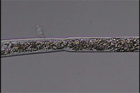
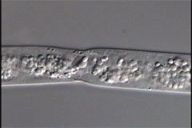
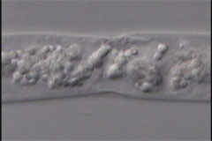
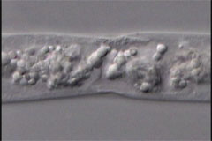

J2 Agamermis D March 29, 2006
Virtual specimen prepared by Melissa Yoder and Guoxiu Wang
Click on the appropriate image below to open the relevant multifocal clip.
J2 March 29, 2006

node 20x1.6x1x

node 60x1x1x

node 60x1.6x1x

nodeb 60x1.6x1x
copyright 2002